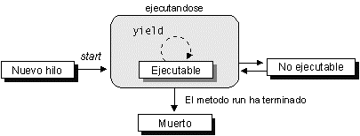

Introducción al lenguaje Java
Java
Java es un lenguaje de programación creado por Sun Microsystems, (empresa que posteriormente fue comprada por Oracle) para poder funcionar en distintos tipos de procesadores. Su sintaxis es muy parecida a la de C o C++, e incorpora como propias algunas características que en otros lenguajes son extensiones: gestión de hilos, ejecución remota, etc.
El código Java, una vez compilado, puede llevarse sin modificación alguna sobre cualquier máquina, y ejecutarlo. Esto se debe a que el código se ejecuta sobre una máquina hipotética o virtual, la Java Virtual Machine, que se encarga de interpretar el código (ficheros compilados .class) y convertirlo a código particular de la CPU que se esté utilizando (siempre que se soporte dicha máquina virtual).
Certificación Sun / Oracle
Aunque el resto del curso de Experto está orientado a certificaciones en el ámbito de JEE, este módulo de Java y Herramientas de Desarrollo se basa en las certificaciones para Java básico o estándar. Dichas certificaciones son dos:
- Oracle Certified Professional Java Programmer (antes SCJP - Sun Certified Java Programmer): http://education.oracle.com/pls/web_prod-plq-dad/db_pages.getpage?page_id=320
- Oracle Certified Master, Java SE 6 Developer (antes SCJD - Sun Certified Java Developper): http://education.oracle.com/pls/web_prod-plq-dad/db_pages.getpage?page_id=321
Para la primera (SCJP), se debe completar un examen. En el caso del certificado para la plataforma Java 1.5, el examen abarca los siguientes apartados generales:
- Sección 1: Declaraciones, inicializaciones y ámbitos: evalúa si el alumno es capaz de escribir código que declare clases o interfaces, utilice adecuadamente la estructura de paquetes e imports, utilice código con tipos simples, arrays, objetos estáticos, variables locales, constructores, métodos estáticos y no estáticos, sobrecarga de métodos, etc
- Sección 2: Control de flujo: uso de sentencias if, switch, bucles (for, do, while, break, continue), manejo y uso de excepciones (try-catch-finally), etc
- Sección 3: Contenidos del API: uso de wrappers básicos (Integer, Boolean, etc), entrada/salida de ficheros, serialización de objetos para E/S, formateo de datos con el paquete java.text, y parseo de cadenas mediante expresiones regulares y similares (paquetes java.util y java.util.regex)
- Sección 4: Concurrencia: manejo de hilos (mediante Thread y mediante Runnable), estados de los hilos, interbloqueos y sincronización
- Sección 5: Conceptos sobre orientación a objetos: desarrollo de código que cumpla los requerimientos de encapsulamiento, cohesión y acoplamiento entre clases (mucha cohesión, poco acoplamiento). Uso del polimorfismo y del casting. Uso de métodos sobrecargados, llamadas a la superclase, etc.
- Sección 6: Colecciones: determinar qué tipos de colecciones (listas, hashmaps, etc) utilizar en diferentes supuestos. Comparaciones y ordenaciones entre objetos de una colección, etc
- Sección 7: Fundamentos: uso correcto de los modificadores de acceso, declaraciones de paquetes, imports. Seguimiento de trazas. Manejo de referencias a objetos. Uso del recolector de basura... etc
Para la segunda (SCJD) es necesario haber obtenido antes la primera certificación (SCJP). Después, se deben superar dos pruebas: un supuesto de programación, y un examen.
La primera prueba (el supuesto de programación), consiste en escribir código para implementar una supuesta aplicación para empresa. Se evaluarán aspectos como documentación, diseño orientado a objetos, desarrollo de la interfaz gráfica, interbloqueos, etc.
La segunda prueba (el examen), es una explicación sobre el desarrollo que hayamos hecho en el supuesto de programación anterior, explicando las decisiones principales que hemos tenido que tomar, ventajas y desventajas de las mismas, y justificación de dichas decisiones, en función de los objetivos propuestos para la implementación.
Más información sobre las certificaciones en los enlaces respectivos vistos antes.
Recursos adicionales
Bibliografía
- Curso de Java, Ian F. Darwin, Ed. Anaya Multimedia, Colección O'Reilly
- Java 2 v5.0, Varios autores, Ed. Anaya Multimedia, Colección Wrox
- Piensa en Java, Bruce Eckel, Ed. Prentice Hall
- Core Java 2, Cay Horstmann y Gary Cornell, Ed. Prentice Hall PTR
- Java in a Nutshell, David Flanagan, Ed. O'Reilly Media
Enlaces
Conceptos previos de POO
Java es un lenguaje orientado a objetos (OO), por lo que, antes de empezara ver qué elementos componen los programas Java, conviene tener claros algunos conceptos de la programación orientada a objetos (POO).
Concepto de clase y objeto
El elemento fundamental a la hora de hablar de programación orientada a objetos es el concepto de objeto en sí, así como el concepto abstracto de clase. Un objeto es un conjunto de variables junto con los métodos relacionados con éstas. Contiene la información (las variables) y la forma de manipular la información (los métodos). Una clase es el prototipo que define las variables y métodos que va a emplear un determinado tipo de objeto, es la definición abstracta de lo que luego supone un objeto en memoria.
Poniendo un símil fuera del mundo de la informática, la clase podría ser el concepto de coche, donde nos vienen a la memoria los parámetros que definen un coche (dimensiones, cilindrada, maletero, etc), y las operaciones que podemos hacer con un coche (acelerar, frenar, adelantar, estacionar). La idea abstracta de coche que tenemos es lo que equivaldría a la clase, y la representación concreta de coches concretos (por ejemplo, Peugeot 307, Renault Megane, Volkswagen Polo...) serían los objetos de tipo coche.
Concepto de campo, método y constructor
Toda clase u objeto se compone internamente de constructores, campos y/o métodos. Veamos qué representa cada uno de estos conceptos: un campo es un elemento que contiene información relativa a la clase, y un método es un elemento que permite manipular la información de los campos. Por otra parte, un constructor es un elemento que permite reservar memoria para almacenar los campos y métodos de la clase, a la hora de crear un objeto de la misma.
Concepto de herencia y polimorfismo
Con la herencia podemos definir una clase a partir de otra que ya exista, de forma que la nueva clase tendrá todas las variables y métodos de la clase a partir de la que se crea, más las variables y métodos nuevos que necesite. A la clase base a partir de la cual se crea la nueva clase se le llama superclase.
Por ejemplo, podríamos tener una clase genérica Animal, y heredamos de ella para formar clases más específicas, como Pato, Elefante, o León. Estas clases tendrían todo lo de la clase padre Animal, y además cada una podría tener sus propios elementos adicionales.
Una característica derivada de la herencia es que, por ejemplo, si tenemos un método dibuja(Animal a), que se encarga de hacer un dibujo del animal que se le pasa como parámetro, podremos pasarle a este método como parámetro tanto un Animal como un Pato, Elefante, o cualquier otro subtipo directo o indirecto de Animal. Esto se conoce como polimorfismo.
Modificadores de acceso
Tanto las clases como sus elementos (constructores, campos y métodos) pueden verse modificados por lo que se suelen llamar modificadores de acceso, que indican hasta dónde es accesible el elemento que modifican. Tenemos tres tipos de modificadores:
- privado: el elemento es accesible únicamente dentro de la clase en la que se encuentra.
- protegido: el elemento es accesible desde la clase en la que se encuentra, y además desde las subclases que hereden de dicha clase.
- público: el elemento es accesible desde cualquier clase.
Clases abstractas e interfaces
Mediante las clases abstractas y los interfaces podemos definir el esqueleto de una familia de clases, de forma que los subtipos de la clase abstracta o la interfaz implementen ese esqueleto para dicho subtipo concreto. Por ejemplo, volviendo con el ejemplo anterior, podemos definir en la clase Animal el método dibuja() y el método imprime(), y que Animal sea una clase abstracta o un interfaz.
Vemos la diferencia entre clase, clase abstracta e interfaz con este supuesto:
- En una clase, al definir Animal tendríamos que implementar el código de los métodos dibuja() e imprime(). Las subclases que hereden de Animal no tendrían por qué implementar los métodos, a no ser que quieran redefinirlos para adaptarlos a sus propias necesidades.
- En una clase abstracta podríamos implementar los métodos que nos interese, dejando sin implementar los demás (dejándolos como métodos abstractos). Dichos métodos tendrían que implementarse en las clases hijas.
- En un interfaz no podemos implementar ningún método en la clase padre, y cada clase hija tiene que hacer sus propias implementaciones de los métodos. Además, las clases hijas podrían implementar otros interfaces.
Componentes de un programa Java
En un programa Java podemos distinguir varios elementos:
Clases
Para definir una clase se utiliza la palabra reservada class, seguida del nombre de la clase:
class MiClase
{
...
}
Es recomendable que los nombres de las clases sean sustantivos (ya que suelen representar entidades), pudiendo estar formados por varias palabras. La primera letra de cada palabra estará en mayúscula y el resto de letras en minúscula. Por ejemplo, DatosUsuario, Cliente, GestorMensajes.
Cuando se trate de una clase encargada únicamente de agrupar un conjunto de recursos o de constantes, su nombre se escribirá en plural. Por ejemplo, Recursos, MensajesError.
Campos y variables
Dentro de una clase, o de un método, podemos definir campos o variables, respectivamente, que pueden ser de tipos simples, o clases complejas, bien de la API de Java, bien que hayamos definido nosotros mismos, o bien que hayamos copiado de otro lugar.
Al igual que los nombres de las clases, suele ser conveniente utilizar sustantivos que describan el significado del campo, pudiendo estar formados también por varias palabras. En este caso, la primera palabra comenzará por minúscula, y el resto por mayúscula. Por ejemplo, apellidos, fechaNacimiento, numIteraciones.
De forma excepcional, cuando se trate de variables auxiliares de corto alcance se puede poner como nombre las iniciales del tipo de datos correspondiente:
int i; Vector v; MiOtraClase moc;
Por otro lado, las constantes se declaran como final static, y sus nombres es escribirán totalmente en mayúsculas, separando las distintas palabras que los formen por caracteres de subrayado ('_'). Por ejemplo, ANCHO_VENTANA, MSG_ERROR_FICHERO.
Métodos
Los métodos o funciones se definen de forma similar a como se hacen en C: indicando el tipo de datos que devuelven, el nombre del método, y luego los argumentos entre paréntesis:
void imprimir(String mensaje)
{
... // Código del método
}
double sumar(double... numeros){
//Número variable de argumentos
//Se accede a ellos como a un vector:
//numeros[0], numeros[1], ...
}
Vector insertarVector(Object elemento, int posicion)
{
... // Código del método
}
Al igual que los campos, se escriben con la primera palabra en minúsculas y el resto comenzando por mayúsculas. En este caso normalmente utilizaremos verbos.
Constructores
Podemos interpretar los constructores como métodos que se llaman igual que la clase, y que se ejecutan con el operador new para reservar memoria para los objetos que se creen de dicha clase:
MiClase()
{
... // Código del constructor
}
MiClase(int valorA, Vector valorV)
{
... // Código de otro constructor
}
No tenemos que preocuparnos de liberar la memoria del objeto al dejar de utilizarlo. Esto lo hace automáticamente el garbage collector. Aún así, podemos usar el método finalize() para liberar manualmente.
Si estamos utilizando una clase que hereda de otra, y dentro del constructor de la subclase queremos llamar a un determinado constructor de la superclase, utilizaremos super. Si no se hace la llamada a super, por defecto la superclase se construirá con su constructor vacío. Si esta superclase no tuviese definido ningún constructor vacío, o bien quisiesemos utilizar otro constructor, podremos llamar a super proporcionando los parámetros correspondientes al constructor al que queramos llamar. Por ejemplo, si heredamos de MiClase y desde la subclase queremos utilizar el segundo constructor de la superclase, al comienzo del constructor haremos la siguiente llamada a super:
SubMiClase()
{
super(0, new Vector());
... // Código de constructor subclase
}
Paquetes
Las clases en Java se organizan (o pueden organizarse) en paquetes, de forma que cada paquete contenga un conjunto de clases. También puede haber subpaquetes especializados dentro de un paquete o subpaquete, formando así una jerarquía de paquetes, que después se plasma en el disco duro en una estructura de directorios y subdirectorios igual a la de paquetes y subpaquetes (cada clase irá en el directorio/subdirectorio correspondiente a su paquete/subpaquete).
Cuando queremos indicar que una clase pertenece a un determinado paquete o subpaquete, se coloca al principio del fichero la palabra reservada package seguida por los paquetes/subpaquetes, separados por '.' :
package paq1.subpaq1;
...
class MiClase {
...
Si queremos desde otra clase utilizar una clase de un paquete o subpaquete determinado (diferente al de la clase en la que estamos), incluimos una sentencia import antes de la clase (y después de la línea package que pueda tener la clase, si la tiene), indicando qué paquete o subpaquete queremos importar:
import paq1.subpaq1.*;
import paq1.subpaq1.MiClase;
La primera opción (*) se utiliza para importar todas las clases del paquete (se utiliza cuando queremos utilizar muchas clases del paquete, para no ir importando una a una). La segunda opción se utiliza para importar una clase en concreto.
Al importar, ya podemos utilizar el nombre de la clase importada directamente en la clase que estamos construyendo. Si no colocásemos el import podríamos utilizar la clase igual, pero al referenciar su nombre tendríamos que ponerlo completo, con paquetes y subpaquetes:
MiClase mc; // Si hemos hecho el 'import' antes
paq1.subpaq1.MiClase mc; // Si NO hemos hecho el 'import' antes
Existe un paquete en la API de Java, llamado java.lang, que no es necesario importar. Todas las clases que contiene dicho paquete son directamente utilizables. Para el resto de paquetes (bien sean de la API o nuestros propios), será necesario importarlos cuando estemos creando una clase fuera de dichos paquetes.
Los paquetes normalmente se escribirán totalmente en minúsculas. Es recomendable utilizar nombres de paquetes similares a la URL de nuestra organización pero a la inversa, es decir, de más general a más concreto. Por ejemplo, si nuestra URL es http://www.jtech.ua.es los paquetes de nuestra aplicación podrían recibir nombres como es.ua.jtech.proyecto.interfaz, es.ua.jtech.proyecto.datos, etc.
Con Eclipse podemos importar de forma automática los paquetes necesarios. Para ello podemos pulsar sobre el código con el botón derecho y seleccionar Source > Organize imports. Esto añadirá y ordenará todos los imports necesarios. Sin embargo, esto no funcionará si el código tiene errores de sintaxis. En ese caso si que podríamos añadir un import individual, situando el cursor sobre el nombre que se quiera importar, pulsando con el botón derecho, y seleccionando Source > Add import.
Tipo enumerado
El tipo enum permite definir un conjunto de posibles valores o estados, que luego podremos utilizar donde queramos:
Ejemplo
// Define una lista de 3 valores y luego comprueba en un switch
// cuál es el valor que tiene un objeto de ese tipo
enum EstadoCivil {soltero, casado, divorciado};
EstadoCivil ec = EstadoCivil.casado;
ec = EstadoCivil.soltero;
switch(ec)
{
case soltero: System.out.println("Es soltero");
break;
case casado: System.out.println("Es casado");
break;
case divorciado:System.out.println("Es divorciado");
break;
}
Los elementos de una enumeración se comportan como objetos Java. Por lo tanto, la forma de nombrar las enumeraciones será similar a la de las clases (cada palabra empezando por mayúscula, y el resto de clases en minúscula).
Como objetos Java que son, estos elementos pueden tener definidos campos, métodos e incluso constructores. Imaginemos por ejemplo que de cada tipo de estado civil nos interesase conocer la retención que se les aplica en el sueldo. Podríamos introducir esta información de la siguiente forma:
enum EstadoCivil {soltero(0.14f), casado(0.18f), divorciado(0.14f);
private float retencion;
EstadoCivil(float retencion) {
this.retencion = retencion;
}
public float getRetencion() {
return retencion;
}
};
De esta forma podríamos calcular de forma sencilla la retención que se le aplica a una persona dado su salario y su estado civil de la siguiente forma:
public float calculaRetencion(EstadoCivil ec, float salario) {
return salario * ec.getRetencion();
}
Dado que los elementos de la enumeración son objetos, podríamos crear nuevos métodos o bien sobrescribir métodos de la clase Object. Por ejemplo, podríamos redefinir el método toString para especificar la forma en la que se imprime cada elemento de la enumeración (por defecto imprime una cadena con el nombre del elemento, por ejemplo "soltero").
Modificadores de acceso
Tanto las clases como los campos y métodos admiten modificadores de acceso, para indicar si dichos elementos tienen ámbito público, protegido o privado. Dichos modificadores se marcan con las palabras reservadas public, protected y private, respectivamente, y se colocan al principio de la declaración:
public class MiClase {
...
protected int b;
...
private int miMetodo(int b) {
...
El modificador protected implica que los elementos que lo llevan son visibles desde la clase, sus subclases, y las demás clases del mismo paquete que la clase.
Si no se especifica ningún modificador, el elemento será considerado de tipo paquete. Este tipo de elementos podrán ser visibles desde la clase o desde clases del mismo paquete, pero no desde las subclases.
Cada fichero Java que creemos debe tener una y sólo una clase pública (que será la clase principal del fichero). Dicha clase debe llamarse igual que el fichero. Aparte, el fichero podrá tener otras clases internas, pero ya no podrán ser públicas.
Por ejemplo, si tenemos un fichero MiClase.java, podría tener esta apariencia:
public class MiClase
{
...
}
class OtraClase
{
...
}
class UnaClaseMas
{
...
}
Si queremos tener acceso a estas clases internas desde otras clases, deberemos declararlas como estáticas. Por ejemplo, si queremos definir una etiqueta para incluir en los puntos 2D definidos en el ejemplo anterior, podemos definir esta etiqueta como clase interna (para dejar claro de esta forma que dicha etiqueta es para utilizarse en Punto2D). Para poder manipular esta clase interna desde fuera deberemos declararla como estática de la siguiente forma:
public class Punto2D {
...
static class Etiqueta {
String texto;
int tam;
Color color;
}
}
Podremos hacer referencia a ella desde fuera de Punto2D de la siguiente forma:
Punto2D.Etiqueta etiq = new Punto2D.Etiqueta();
Otros modificadores
Además de los modificadores de acceso vistos antes, en clases, métodos y/o campos se pueden utilizar también estos modificadores:
- abstract: elemento base para la herencia (los objetos subtipo deberán definir este elemento). Se utiliza para definir clases abstractas, y métodos abstractos dentro de dichas clases, para que los implementen las subclases que hereden de ella.
- static: elemento compartido por todos los objetos de la misma clase. Con este modificador, no se crea una copia del elemento en cada objeto que se cree de la clase, sino que todos comparten una sola copia en memoria del elemento, que se crea sin necesidad de crear un objeto de la clase que lo contiene. Como se ha visto anteriormente, también puede ser aplicado sobre clases, con un significado diferente en este caso.
- final: objeto final, no modificable (se utiliza para definir constantes) ni heredable (en caso de aplicarlo a clases).
- synchronized: para elementos a los que no se puede acceder al mismo tiempo desde distintos hilos de ejecución.
Estos modificadores se colocan tras los modificadores de acceso:
// Clase abstracta para heredar de ella
public abstract class Ejemplo
{
// Constante estática de valor 10
public static final TAM = 10;
// Método abstracto a implementar
public abstract void metodo();
public synchronized void otroMetodo()
{
... // Aquí dentro sólo puede haber un hilo a la vez
}
}
Por ejemplo, si tenemos:
public class UnaClase
{
public int a;
public static int metodo()
{
return a + 1;
}
}
Dará error, porque el campo a no es estático, y lo estamos utilizando dentro del método estático. Para solucionarlo tenemos dos posibilidades: definir a como estático (si el diseño del programa lo permite), o bien crear un objeto de tipo UnaClase en el método, y utilizar su campo a (que ya no hará falta que sea estático, porque hemos creado un objeto y ya podemos acceder a su campo a):
public class UnaClase
{
public int a;
public static int metodo()
{
UnaClase uc = new UnaClase();
// ... Aquí haríamos que uc.a tuviese el valor adecuado
return uc.a + 1;
}
}
Por ejemplo, si hacemos lo siguiente:
UnaClase uc = new UnaClase(); uc.metodo();
Aparecerá un warning, debido a que el método metodo no es propio de la instancia concreta uc, sino da la clase UnaClase en general. Por lo tanto, deberemos llamarlo con:
UnaClase.metodo();
Imports estáticos
Los imports estáticos permiten importar los elementos estáticos de una clase, de forma que para referenciarlos no tengamos que poner siempre como prefijo el nombre de la clase. Por ejemplo, podemos utilizar las constantes de color de la clase java.awt.Color, o bien los métodos matemáticos de la case Math.
Ejemplo
import static java.awt.Color;
import static java.lang.Math;
public class...
{
...
JLabel lbl = new JLabel();
lbl.setBackground(white); // Antes sería Color.white
...
double raiz = sqrt(1252.2); // Antes sería Math.sqrt(...)
}
Argumentos variables
Java permite pasar un número variable de argumentos a una función (como sucede con funciones como printf en C). Esto se consigue mediante la expresión "..." a partir del momento en que queramos tener un número variable de argumentos.
Ejemplo
// Funcion que tiene un parámetro String obligatorio
// y n parámetros int opcionales
public void miFunc(String param, int... args)
{
...
// Una forma de procesar n parametros variables
for (int argumento: args)
{
...
}
...
}
...
miFunc("Hola", 1, 20, 30, 2);
miFunc("Adios");
Metainformación o anotaciones
Se tiene la posibilidad de añadir ciertas anotaciones en campos, métodos, clases y otros elementos, que permitan a las herramientas de desarrollo o de despliegue leerlas y realizar ciertas tareas. Por ejemplo, generar ficheros fuentes, ficheros XML, o un Stub de métodos para utilizar remotamente con RMI.
Un ejemplo más claro lo tenemos en las anotaciones que ya se utilizan para la herramienta Javadoc. Las marcas @deprecated no afectan al comportamiento de los métodos que las llevan, pero previenen al compilador para que muestre una advertencia indicando que el método que se utiliza está desaconsejado. También se tienen otras marcas @param, @return, @see, etc, que utiliza Javadoc para generar las páginas de documentación y las relaciones entre ellas.
Ejecución de clases: método main
En las clases principales de una aplicación (las clases que queramos ejecutar) debe haber un método main con la siguiente estructura:
public static void main(String[] args)
{
... // Código del método
}
Dentro pondremos el código que queramos ejecutar desde esa clase. Hay que tener en cuenta que main es estático, con lo que dentro sólo podremos utilizar campos y métodos estáticos, o bien campos y métodos de objetos que creemos dentro del main.
Herencia e interfaces
Herencia
Cuando queremos que una clase herede de otra, se utiliza al declararla la palabra extends tras el nombre de la clase, para decir de qué clase se hereda. Para hacer que Pato herede de Animal:
class Pato extends Animal
Con esto automáticamente Pato tomaría todo lo que tuviese Animal (aparte, Pato puede añadir sus características propias). Si Animal fuese una clase abstracta, Pato debería implementar los métodos abstractos que tuviese.
Punteros this y super
El puntero this apunta al objeto en el que nos encontramos. Se utiliza normalmente cuando hay variables locales con el mismo nombre que variables de instancia de nuestro objeto:
public class MiClase
{
int i;
public MiClase(int i)
{
this.i = i; // i de la clase = parametro i
}
}
También se suele utilizar para remarcar que se está accediendo a variables de instancia.
El puntero super se usa para acceder a un elemento en la clase padre. Si la clase Usuario tiene un método getPermisos, y una subclase UsuarioAdministrador sobrescribe dicho método, podríamos llamar al método de la super-clase con:
public class UsuarioAdministrador extends Usuario {
public List<String> getPermisos() {
List<String> permisos = super.getPermisos();
permisos.add(PERMISO_ADMINISTRADOR);
return permisos;
}
}
También podemos utilizar this y super como primera instrucción dentro de un constructor para invocar a otros constructores. Dado que toda clase en Java hereda de otra clase, siempre será necesario llamar a alguno de los constructores de la super-clase para que se construya la parte relativa a ella. Por lo tanto, si al comienzo del constructor no se especifica ninguna llamada a this o super, se considera que hay una llamada implícita al constructor sin parámetros de la super-clase (super()). Es decir, los dos constructores siguientes son equivalentes:
public Punto2D(int x, int y, String etiq) {
// Existe una llamada implicita a super()
this.x = x;
this.y = y;
this.etiq = etiq;
}
public Punto2D(int x, int y, String etiq) {
super();
this.x = x;
this.y = y;
this.etiq = etiq;
}
Pero es posible que la super-clase no disponga de un constructor sin parámetros. En ese caso, si no hacemos una llamada explícita a super nos dará un error de compilación, ya que estará intentando llamar a un constructor inexistente de forma implícita. Es posible también, que aunque el constructor sin parámetros exista, nos interese llamar a otro constructor a la hora de construir la parte relativa a la super-clase. Imaginemos por ejemplo que la clase Punto2D anterior deriva de una clase PrimitivaGeometrica que almacena, como información común de todas las primitivas, una etiqueta de texto, y ofrece un constructor que toma como parámetro dicha etiqueta. Podríamos utilizar dicho constructor desde la subclase de la siguiente forma:
public Punto2D(int x, int y, String etiq) {
super(etiq);
this.x = x;
this.y = y;
}
También puede ocurrir que en lugar de querer llamar directamente al constructor de la super-clase nos interese basar nuestro constructor en otro de los constructores de nuestra misma clase. En tal caso llamaremos a this al comienzo de nuestro constructor, pasándole los parámetros correspondientes al constructor en el que queremos basarnos. Por ejemplo, podríamos definir un constructor sin parámetros de nuestra clase punto, que se base en el constructor anterior (más específico) para crear un punto con una serie de datos por defecto:
public Punto2D() {
this(DEFAULT_X, DEFAULT_Y, DEFAULT_ETIQ);
}
Es importante recalcar que las llamadas a this o super deben ser siempre la primera instrucción del constructor.
Interfaces y clases abstractas
Ya hemos visto cómo definir clases normales, y clases abstractas. Si queremos definir un interfaz, se utiliza la palabra reservada interface, en lugar de class, y dentro declaramos (no implementamos), los métodos que queremos que tenga la interfaz:
public interface MiInterfaz
{
public void metodoInterfaz();
public float otroMetodoInterfaz();
}
Después, para que una clase implemente los métodos de esta interfaz, se utiliza la palabra reservada implements tras el nombre de la clase:
public class UnaClase implements MiInterfaz
{
public void metodoInterfaz()
{
... // Código del método
}
public float otroMetodoInterfaz()
{
... // Código del método
}
}
Notar que si en lugar de poner implements ponemos extends, en ese caso UnaClase debería ser un interfaz, que heredaría del interfaz MiInterfaz para definir más métodos, pero no para implementar los que tiene la interfaz. Esto se utilizaría para definir interfaces partiendo de un interfaz base, para añadir más métodos a implementar.
Una clase puede heredar sólo de otra única clase, pero puede implementar cuantos interfaces necesite:
public class UnaClase extends MiClase
implements MiInterfaz, MiInterfaz2, MiInterfaz3
{
...
}
Cuando una clase implementa una interfaz se está asegurando que dicha clase va a ofrecer los métodos definidos en la interfaz, es decir, que la clase al menos nos ofrece esa interfaz para acceder a ella. Cuando heredamos de una clase abstracta, heredamos todos los campos y el comportamiento de la superclase, y además deberemos definir algunos métodos que no habían sido implementados en la superclase.
Desde el punto de vista del diseño, podemos ver la herencia como una relación ES, mientras que la implementación de una interfaz sería una relación ACTÚA COMO.
Hilos
En este curso no vamos a profundizar en la programación de hilos. Si bien las aplicaciones en servidor funcionan sobre múltiples hilos, de su gestión ya se ocupan los servidores de aplicaciones, como se verá. Independientemente de esto, es positivo conocer el mecanismo de hilos y sobre todo, su sincronización.
Un hilo es un flujo de control dentro de un programa. Creando varios hilos podremos realizar varias tareas simultáneamente. Cada hilo tendrá sólo un contexto de ejecución (contador de programa, pila de ejecución). Es decir, a diferencia de los procesos UNIX, no tienen su propio espacio de memoria sino que acceden todos al mismo espacio de memoria común, por lo que será importante su sincronización cuando tengamos varios hilos accediendo a los mismos objetos.
Creación de hilos
En Java los hilos están encapsulados en la clase Thread. Para crear un hilo tenemos dos posibilidades:
- Heredar de Thread redefiniendo el método run().
- Crear una clase que implemente la interfaz Runnable que nos obliga a definir el método run().
En ambos casos debemos definir un método run() que será el que contenga el código del hilo. Desde dentro de este método podremos llamar a cualquier otro método de cualquier objeto, pero este método run() será el método que se invoque cuando iniciemos la ejecución de un hilo. El hilo terminará su ejecución cuando termine de ejecutarse este método run().
Para crear nuestro hilo mediante herencia haremos lo siguiente:
public class EjemploHilo extends Thread
{
public void run()()
{
// Código del hilo
}
}
Una vez definida la clase de nuestro hilo deberemos instanciarlo y ejecutarlo de la siguiente forma:
Thread t = new EjemploHilo(); t.start();
Al llamar al método start del hilo, comenzará ejecutarse su método run. Crear un hilo heredando de Thread tiene el problema de que al no haber herencia múltiple en Java, si heredamos de Thread no podremos heredar de ninguna otra clase, y por lo tanto un hilo no podría heredar de ninguna otra clase.
Este problema desaparece si utilizamos la interfaz Runnable para crear el hilo, ya que una clase puede implementar varios interfaces. Definiremos la clase que contenga el hilo como se muestra a continuación:
public class EjemploHilo implements Runnable
{
public void run()
{
// Código del hilo
}
}
Para instanciar y ejecutar un hilo de este tipo deberemos hacer lo siguiente:
Thread t = new Thread(new EjemploHilo()); t.start();
Esto es así debido a que en este caso EjemploHilo no deriva de una clase Thread, por lo que no se puede considerar un hilo, lo único que estamos haciendo implementando la interfaz es asegurar que vamos a tener definido el método run(). Con esto lo que haremos será proporcionar esta clase al constructor de la clase Thread, para que el objeto Thread que creemos llame al método run() de la clase que hemos definido al iniciarse la ejecución del hilo, ya que implementando la interfaz le aseguramos que esta función existe.
Ciclo de vida y prioridades
Un hilo pasará por varios estados durante su ciclo de vida.
Thread t = new Thread(this);
Una vez se ha instanciado el objeto del hilo, diremos que está en estado de Nuevo hilo.
t.start();
Cuando invoquemos su método start() el hilo pasará a ser un hilo vivo, comenzándose a ejecutar su método run(). Una vez haya salido de este método pasará a ser un hilo muerto.
La única forma de parar un hilo es hacer que salga del método run() de forma natural. Podremos conseguir esto haciendo que se cumpla una condición de salida de run() (lógicamente, la condición que se nos ocurra dependerá del tipo de programa que estemos haciendo). Las funciones para parar, pausar y reanudar hilos están desaprobadas en las versiones actuales de Java.
Mientras el hilo esté vivo, podrá encontrarse en dos estados: Ejecutable y No ejecutable. El hilo pasará de Ejecutable a No ejecutable en los siguientes casos:
- Cuando se encuentre dormido por haberse llamado al método sleep(), permanecerá No ejecutable hasta haber transcurrido el número de milisegundos especificados.
- Cuando se encuentre bloqueado en una llamada al método wait() esperando que otro hilo lo desbloquee llamando a notify() o notifyAll(). Veremos cómo utilizar estos métodos más adelante.
- Cuando se encuentre bloqueado en una petición de E/S, hasta que se complete la operación de E/S.

Lo único que podremos saber es si un hilo se encuentra vivo o no, llamando a su método isAlive().
Prioridades de los hilos
Además, una propiedad importante de los hilos será su prioridad. Mientras el hilo se encuentre vivo, el scheduler de la máquina virtual Java le asignará o lo sacará de la CPU, coordinando así el uso de la CPU por parte de todos los hilos activos basándose en su prioridad. Se puede forzar la salida de un hilo de la CPU llamando a su método yield(). También se sacará un hilo de la CPU cuando un hilo de mayor prioridad se haga Ejecutable, o cuando el tiempo que se le haya asignado expire.
Para cambiar la prioridad de un hilo se utiliza el método setPriority(), al que deberemos proporcionar un valor de prioridad entre MIN_PRIORITY y MAX_PRIORITY (tenéis constantes de prioridad disponibles dentro de la clase Thread, consultad el API de Java para ver qué valores de constantes hay).
Sincronización de hilos
Muchas veces los hilos deberán trabajar de forma coordinada, por lo que es necesario un mecanismo de sincronización entre ellos.
Un primer mecanismo de comunicación es la variable cerrojo incluida en todo objeto Object, que permitirá evitar que más de un hilo entre en la sección crítica para un objeto determinado. Los métodos declarados como synchronized utilizan el cerrojo del objeto al que pertenecen evitando que más de un hilo entre en ellos al mismo tiempo.
public synchronized void seccion_critica()
{
// Código sección crítica
}
Todos los métodos synchronized de un mismo objeto (no clase, sino objeto de esa clase), comparten el mismo cerrojo, y es distinto al cerrojo de otros objetos (de la misma clase, o de otras).
También podemos utilizar cualquier otro objeto para la sincronización dentro de nuestro método de la siguiente forma:
synchronized(objeto_con_cerrojo)
{
// Código sección crítica
}
de esta forma sincronizaríamos el código que escribiésemos dentro, con el código synchronized del objeto objeto_con_cerrojo.
Además podemos hacer que un hilo quede bloqueado a la espera de que otro hilo lo desbloquee cuando suceda un determinado evento. Para bloquear un hilo usaremos la función wait(), para lo cual el hilo que llama a esta función debe estar en posesión del monitor, cosa que ocurre dentro de un método synchronized, por lo que sólo podremos bloquear a un proceso dentro de estos métodos.
Para desbloquear a los hilos que haya bloqueados se utilizará notifyAll(), o bien notify() para desbloquear sólo uno de ellos aleatoriamente. Para invocar estos métodos ocurrirá lo mismo, el hilo deberá estar en posesión del monitor.
Cuando un hilo queda bloqueado liberará el cerrojo para que otro hilo pueda entrar en la sección crítica del objeto y desbloquearlo.
Por último, puede ser necesario esperar a que un determinado hilo haya finalizado su tarea para continuar. Esto lo podremos hacer llamando al método join() de dicho hilo, que nos bloqueará hasta que el hilo haya finalizado.
Clases útiles
Cuando se programa con Java, se dispone de antemano de un conjunto de clases ya implementadas. Estas clases (aparte de las que pueda hacer el usuario) forman parte del propio lenguaje (lo que se conoce como API (Application Programming Interface) de Java).
En esta sección vamos a ver una serie de clases que conviene conocer ya que nos serán de gran utilidad para realizar nuestros programas:
Object
Esta es la clase base de todas las clases en Java, toda clase hereda en última instancia de la clase Object, por lo que los métodos que ofrece estarán disponibles en cualquier objeto Java, sea de la clase que sea.
En Java es importante distinguir claramente entre lo que es una variable, y lo que es un objeto. Las variables simplemente son referencias a objetos, mientras que los objetos son las entidades instanciadas en memoria que podrán ser manipulados mediante las referencias que tenemos a ellos (mediante variable que apunten a ellos) dentro de nuestro programa. Cuando hacemos lo siguiente:
new MiClase()
Se está instanciando en memoria un nuevo objeto de clase MiClase y nos devuelve una referencia a dicho objeto. Nosotros deberemos guardarnos dicha referencia en alguna variable con el fin de poder acceder al objeto creado desde nuestro programa:
MiClase mc = new MiClase();
Es importante declarar la referencia del tipo adecuado (en este caso tipo MiClase) para manipular el objeto, ya que el tipo de la referencia será el que indicará al compilador las operaciones que podremos realizar con dicho objeto. El tipo de esta referencia podrá ser tanto el mismo tipo del objeto al que vayamos a apuntar, o bien el de cualquier clase de la que herede o interfaz que implemente nuestro objeto. Por ejemplo, si MiClase se define de la siguiente forma:
public class MiClase extends Thread implements List {
...
}
Podremos hacer referencia a ella de diferentes formas:
MiClase mc = new MiClase(); Thread t = new MiClase(); List l = new MiClase(); Object o = new MiClase();
Esto es así ya que al heredar tanto de Thread como de Object, sabemos que el objeto tendrá todo lo que tienen estas clases más lo que añada MiClase, por lo que podrá comportarse como cualquiera de las clases anteriores. Lo mismo ocurre al implementar una interfaz, al forzar a que se implementen sus métodos podremos hacer referencia al objeto mediante la interfaz ya que sabemos que va a contener todos esos métodos. Siempre vamos a poder hacer esta asignación 'ascendente' a clases o interfaces de las que deriva nuestro objeto.
Si hacemos referencia a un objeto MiClase mediante una referencia Object por ejemplo, sólo podremos acceder a los métodos de Object, aunque el objeto contenga métodos adicionales definidos en MiClase. Si conocemos que nuestro objeto es de tipo MiClase, y queremos poder utilizarlo como tal, podremos hacer una asignación 'descendente' aplicando una conversión cast al tipo concreto de objeto:
Object o = new MiClase(); ... MiClase mc = (MiClase) o;
Si resultase que nuestro objeto no es de la clase a la que hacemos cast, ni hereda de ella ni la implementa, esta llamada resultará en un ClassCastException indicando que no podemos hacer referencia a dicho objeto mediante esa interfaz debido a que el objeto no la cumple, y por lo tanto podrán no estar disponibles los métodos que se definen en ella.
Una vez hemos visto la diferencia entre las variables (referencias) y objetos (entidades) vamos a ver como se hará la asignación y comparación de objetos. Si hiciesemos lo siguiente:
MiClase mc1 = new MiClase(); MiClase mc2 = mc1;
Puesto que hemos dicho que las variables simplemente son referencias a objetos, la asignación estará copiando una referencia, no el objeto. Es decir, tanto la variable mc1 como mc2 apuntarán a un mismo objeto.
Si lo que queremos es copiar un objeto, teniendo dos entidades independientes, deberemos invocar el método clone del objeto a copiar:
MiClase mc2 = (MiClase)mc1.clone();
El método clone es un método de la clase Object que estará disponible para cualquier objeto Java, y nos devuelve un Object genérico, ya que al ser un método que puede servir para cualquier objeto nos debe devolver la copia de este tipo. De él tendremos que hacer una conversión cast a la clase de la que se trate como hemos visto en el ejemplo. Al hacer una copia con clone se copiarán los valores de todas las variables de instancia, pero si estas variables son referencias a objetos sólo se copiará la referencia, no el objeto. Es decir, no se hará una copia en profundidad. Si queremos hacer una copia en profundidad deberemos sobrescribir el método clone para hacer una copia de cada uno de estos objetos. Para copiar objetos también podríamos definir un constructor de copia, al que se le pase como parámetro el objeto original a copiar.
Por otro lado, para la comparación, si hacemos lo siguiente:
mc1 == mc2
Estaremos comparando referencias, por lo que estaremos viendo si las dos referencias apuntan a un mismo objeto, y no si los objetos a los que apuntan son iguales. Para ver si los objetos son iguales, aunque sean entidades distintas, tenemos:
mc1.equals(mc2)
Este método también es propio de la clase Object, y será el que se utilice para comparar internamente los objetos. Para que funcione correctamente, este método deberán ser redefinido en nuestras clases para indicar cuando se considera que dos objetos son iguales. Por ejemplo podemos tener una clase como la siguiente:
public class Punto2D {
public int x, y;
...
public boolean equals(Object o) {
Punto2D p = (Punto2D)o;
// Compara objeto this con objeto p
return (x == p.x && y == p.y);
}
Un último método interesante de la clase Object es toString. Este método nos devuelve una cadena (String) que representa dicho objeto. Por defecto nos dará un identificador del objeto, pero nosotros podemos sobrescribirla en nuestras propias clases para que genere la cadena que queramos. De esta manera podremos imprimir el objeto en forma de cadena de texto, mostrandose los datos con el formato que nosotros les hayamos dado en toString. Por ejemplo, si tenemos una clase Punto2D, sería buena idea hacer que su conversión a cadena muestre las coordenadas (x,y) del punto:
public class Punto2D {
public int x,y;
...
public String toString() {
String s = "(" + x + "," + y + ")";
return s;
}
}
Properties
Esta clase es un subtipo de Hastable, que se encarga de almacenar una serie de propiedades asociando un valor a cada una de ellas. Estas propiedades las podremos utilizar para registrar la configuración de nuestra aplicación. Además esta clase nos permite cargar o almacenar esta información en algún dispositivo, como puede ser en disco, de forma que sea persistente.
Puesto que hereda de Hashtable, podremos utilizar sus métodos, pero también aporta métodos propios para añadir propiedades:
Object setProperty(Object clave, Object valor)
Equivalente al método put.
Object getProperty(Object clave)
Equivalente al método get.
Object getProperty(Object clave, Object default)
Esta variante del método resulta útil cuando queremos que determinada propiedad devuelva algún valor por defecto si todavía no se le ha asignado ningún valor.
Además, como hemos dicho anteriormente, para hacer persistentes estas propiedades de nuestra aplicación, se proporcionan métodos para almacenarlas o leerlas de algún dispositivo de E/S:
void load(InputStream entrada)
Lee las propiedades del flujo de entrada proporcionado. Este flujo puede por ejemplo referirse a un fichero del que se leerán los datos.
void store(OutputStream salida, String cabecera)
Almacena las información de las propiedades escribiendolas en el flujo de salida especificado. Este flujo puede por ejemplo referirse a un fichero en disco, en el que se guardará nuestro conjunto de propiedades, pudiendo especificar una cadena que se pondrá como cabecera en el fichero, y que nos permite añadir algún comentario sobre dicho fichero.
System
Esta clase nos ofrece una serie de métodos y campos útiles del sistema. Esta clase no se debe instanciar, todos estos métodos y campos son estáticos.
Podemos encontrar los objetos que encapsulan la entrada, salida y salida de error estándar, así como métodos para redireccionarlas, que veremos con más detalle en el tema de entrada/salida.
También nos permite acceder al gestor de seguridad instalado, como veremos en el tema sobre seguridad.
Otros métodos útiles que encontramos son:
void exit(int estado)
Finaliza la ejecución de la aplicación, devolviendo un código de estado. Normalmente el código 0 significa que ha salido de forma normal, mientras que con otros códigos indicaremos que se ha producido algún error.
void gc()
Fuerza una llamada al colector de basura para limpiar la memoria. Esta es una operación costosa. Normalmente no lo llamaremos explicitamente, sino que dejaremos que Java lo invoque cuando sea necesario.
long currentTimeMillis()
Nos devuelve el tiempo medido en el número de milisegundos transcurridos desde el 1 de Enero de 1970 a las 0:00.
void arraycopy(Object fuente, int pos_fuente,
Object destino, int pos_dest, int n)
Copia n elementos del array fuente, desde la posición pos_fuente, al array destino a partir de la posición pos_dest.
Properties getProperties()
Devuelve un objeto Properties con las propiedades del sistema. En estas propiedades podremos encontrar la siguiente información:
| Clave | Contenido |
| file.separator | Separador entre directorios en la ruta de los ficheros. Por ejemplo "/" en UNIX. |
| java.class.path | Classpath de Java |
| java.class.version | Versión de las clases de Java |
| java.home | Directorio donde está instalado Java |
| java.vendor | Empresa desarrolladora de la implementación de la plataforma Java instalada |
| java.vendor.url | URL de la empresa |
| java.version | Versión de Java |
| line.separator | Separador de fin de líneas utilizado |
| os.arch | Arquitectura del sistema operativo |
| os.name | Nombre del sistema operativo |
| os.version | Versión del sistema operativo |
| path.separator | Separador entre los distintos elementos de una variable de entorno tipo PATH. Por ejemplo ":" |
| user.dir | Directorio actual |
| user.home | Directorio de inicio del usuario actual |
| user.name | Nombre de la cuenta del usuario actual |
Runtime
Toda aplicación Java tiene una instancia de la clase Runtime que se encargará de hacer de interfaz con el entorno en el que se está ejecutando. Para obtener este objeto debemos utilizar el siguiente método estático:
Runtime rt = Runtime.getRuntime();
Una de las operaciones que podremos realizar con este objeto, será ejecutar comandos como si nos encontrásemos en la línea de comandos del sistema operativo. Para ello utilizaremos el siguiente método:
rt.exec(comando);
De esta forma podremos invocar programas externos desde nuestra aplicación Java.
Math
La clase Math nos será de gran utilidad cuando necesitemos realizar operaciones matemáticas. Esta clase no necesita ser instanciada, ya que todos sus métodos son estáticos. Entre estos métodos podremos encontrar todas las operaciones matemáticas básicas que podamos necesitar, como logaritmos, exponenciales, funciones trigonométricas, generación de números aleatorios, conversión entre grados y radianes, etc. Además nos ofrece las constantes de los números PI y E.
Otras clases
Si miramos dentro del paquete java.util, podremos encontrar una serie de clases que nos podrán resultar útiles para determinadas aplicaciones.
Entre ellas tenemos la clase Locale que almacena información sobre una determinada región del mundo (país e idioma), y que podrá ser utilizada para internacionalizar nuestra aplicación de forma sencilla. Una clase relacionada con esta última es ResourceBundle, con la que podemos definir las cadenas de texto de nuestra aplicación en una serie de ficheros de propiedades (uno para cada idioma). Por ejemplo, podríamos tener dos ficheros Textos_en.properties y Textos_es.properties con los textos en inglés y en castellano respectivamente. Si abrimos el bundle de nombre Textos, se utilizará el locale de nuestro sistema para cargar los textos del fichero que corresponda. También encontramos otras clases relacionadas con Locale, como por ejemplo Currency con información monetaria adaptada a nuestra zona, clases que nos permiten formatear números o fechas (NumberFormat y DateFormat respectivamente) según las convenciones de nuestra zona, o bien de forma personalizada, y la clase Calendar, que nos será útil cuando trabajemos con fechas y horas, para realizar operaciones con fechas, compararlas, o acceder a sus campos por separado.
Estructuras de datos
En nuestras aplicaciones normalmente trabajamos con diversos conjuntos de atributos que son siempre utilizados de forma conjunta (por ejemplo, los datos de un punto en un mapa: coordenada x, coordenada y, descripcion). Estos datos se deberán ir pasando entre las diferentes capas de la aplicación.
Podemos utilizar el patrón Transfer Object para encapsular estos datos en un objeto, y tratarlos así de forma eficiente. Este objeto tendrá como campos los datos que encapsula. En el caso de que estos campos sean privados, nos deberá proporcionar métodos para acceder a ellos. Estos métodos son conocidos como getters y setters, y nos permitirán consultar o modificar su valor respectivamente. Una vez escritos los campos privados, Eclipse puede generar los getters y setters de forma automática pinchando sobre el código fuente con el botón derecho del ratón y seleccionando la opción Source > Generate Getters and Setters.... Por ejemplo, si creamos una clase como la siguiente:
public class Punto2D {
private int x;
private int y;
private String descripcion;
}
Al generar los getters y setters con Eclipse aparecerán los siguientes métodos:
public String getDescripcion() {
return descripcion;
}
public void setDescripcion(String descripcion) {
this.descripcion = descripcion;
}
public int getX() {
return x;
}
public void setX(int x) {
this.x = x;
}
public int getY() {
return y;
}
public void setY(int y) {
this.y = y;
}
Con Eclipse también podremos generar diferentes tipos de constructores para estos objetos. Por ejemplo, con la opción Source > Generate Constructor Using Fields... generará un constructor que tomará como entrada los campos del objeto que le indiquemos.
BeanUtils
Idealmente un mismo campo sólo estará en una clase, por ejemplo, los campos correspondientes a los datos personales de un cliente no tienen por qué repetirse una y otra vez en distintas clases. Sin embargo cuando construimos un Transfer Object es bastante común que copiemos datos entre campos que tienen una correspondencia exacta. Por ejemplo, tenemos el siguiente Transfer Object que es muy similar al Punto2D:
public class Punto3D {
private int x;
private int y;
private int z;
private String descripcion;
/* ...y los getters y setters para los cuatro campos */
}
Si necesitamos copiar los datos de Punto3D a Punto2D, tres de los campos coinciden. (Esta operación sería una proyección del punto sobre el plano XY). Manualmente necesitaríamos hacer:
punto2D.setX(punto3D.getX()); punto2D.setY(punto3D.getY()); punto2D.setDescripcion(punto3D.getDescripcion());
La clase BeanUtils, perteneciente a la biblioteca commons-beanutils de Apache, nos proporciona el método copyProperties(objetoDestino, objetoOrigen) que permite hacer lo mismo en una sola línea. Se trata de un wrapper que hace uso de la API de Reflection. Esta API nos permite, entre otras cosas, examinar modificadores, tipos y campos de un objeto en tiempo de ejecución.
BeanUtils.copyProperties(punto2D, punto3D);
Lo que importa es que los getters y setters que se vayan a copiar coincidan en el tipo y en su nombre a partir del prefijo get y set. Aparte de incluir la biblioteca commons-beanutils también se requiere incluir commons-logging, de la cuál hace uso el método copyProperties(...).